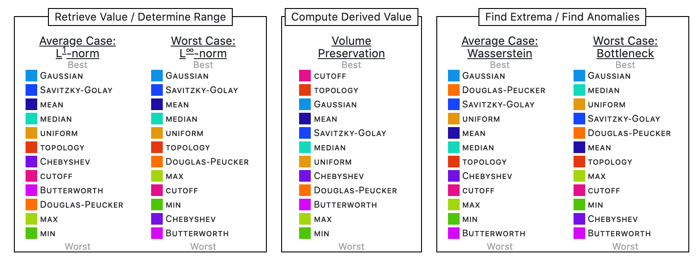
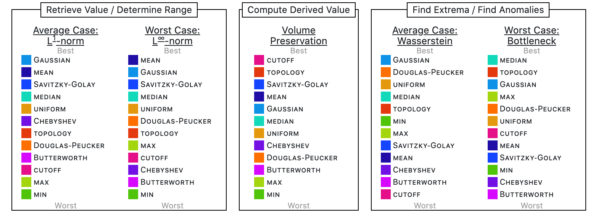
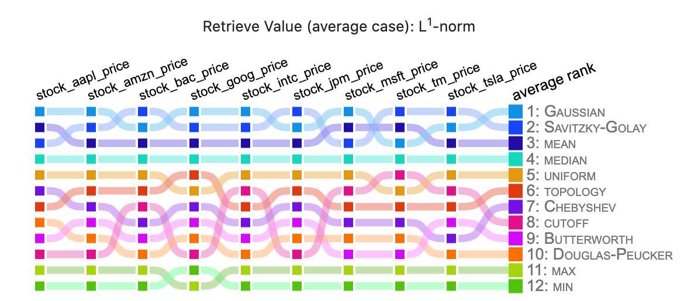
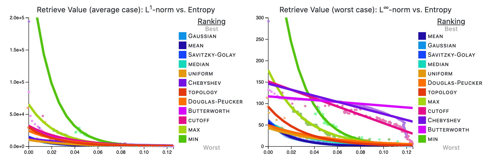
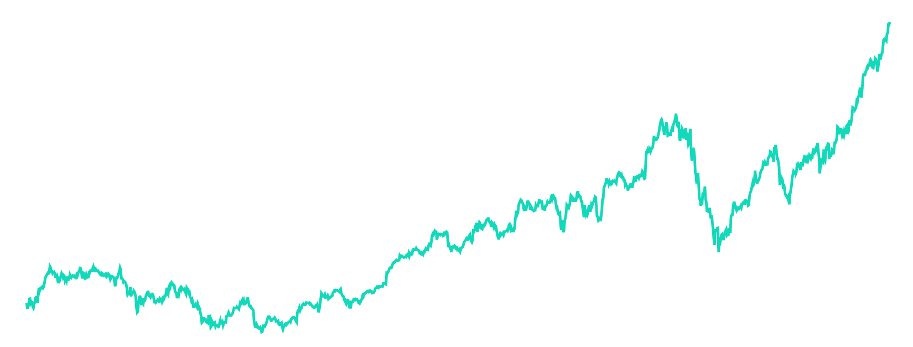
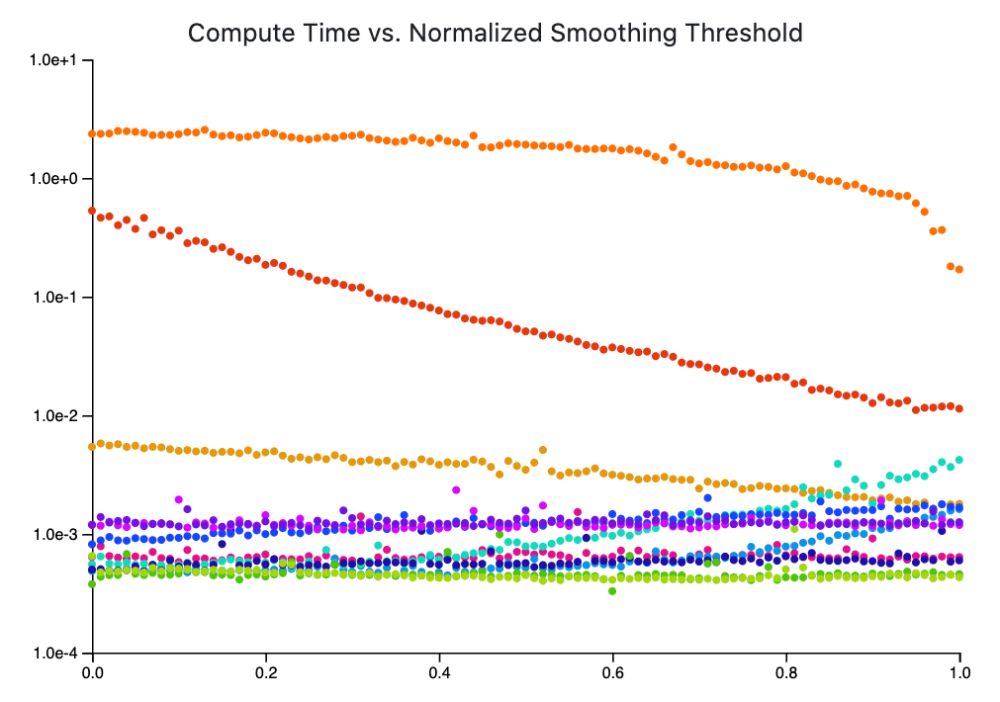
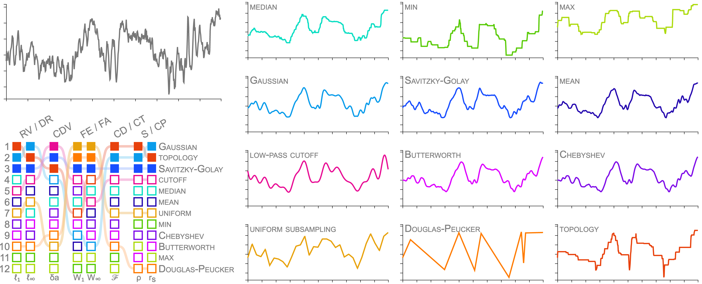

Abstract
We present a comprehensive framework for evaluating line chart smoothing methods under a variety of visual analytics tasks. Line charts are commonly used to visualize a series of data samples. When the number of samples is large, or the data are noisy, smoothing can be applied to make the signal more apparent. However, there are a wide variety of smoothing techniques available, and the effectiveness of each depends upon both nature of the data and the visual analytics task at hand. To date, the visualization community lacks a summary work for analyzing and classifying the various smoothing methods available. In this paper, we establish a framework, based on 8 measures of the line smoothing effectiveness tied to 8 low-level visual analytics tasks. We then analyze 12 methods coming from 4 commonly used classes of line chart smoothing—rank filters, convolutional filters, frequency domain filters, and subsampling. The results show that while no method is ideal for all situations, certain methods, such as Gaussian filters and Topology-based subsampling, perform well in general. Other methods, such as low-pass cutoff filters and Douglas-Peucker subsampling, perform well for specific visual analytics tasks. Almost as importantly, our framework demonstrates that several methods, including the commonly used uniform subsampling, produce low-quality results, and should, therefore, be avoided, if possible.
Summary Ranks

Rank By Data Category

Rank By Dataset

Entropy Plots

Interactive Smoothing

Performance Visualization

Paper Figures

This work was partially supported by the National Science Foundation (IIS-1845204).